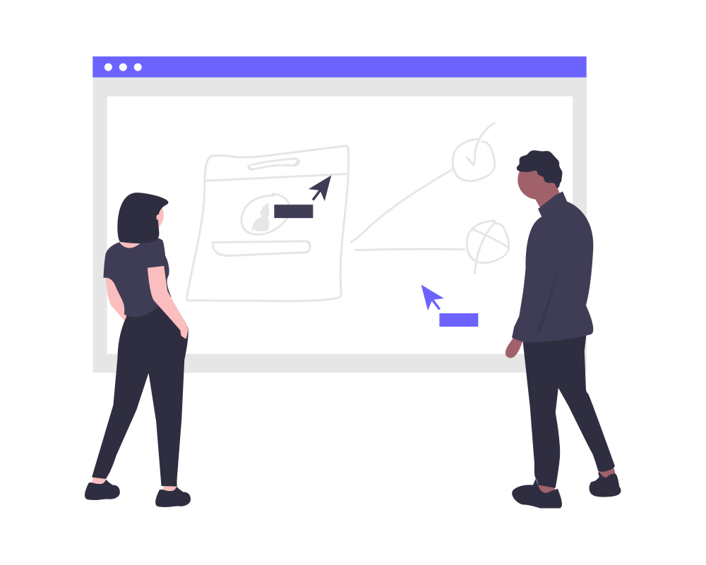

History and Motivation
 This project was started in Autumn Session 2019 by a research group at National Institute of Technology Rourkela under the guidance of Prof. B.P. Nayak(the same group that runs purplepotion) of Regenerative and Rehabilitative Medicine Laboratory, Department of Biomedical Engineering. The motivation behind this research is to improve the performance of the state-of-the art ML and DL models to detect Adverse Drug Reaction Signals(ADRS) from social media platforms like Twitter using the concept of Data Programming .
This project was started in Autumn Session 2019 by a research group at National Institute of Technology Rourkela under the guidance of Prof. B.P. Nayak(the same group that runs purplepotion) of Regenerative and Rehabilitative Medicine Laboratory, Department of Biomedical Engineering. The motivation behind this research is to improve the performance of the state-of-the art ML and DL models to detect Adverse Drug Reaction Signals(ADRS) from social media platforms like Twitter using the concept of Data Programming .
How it might look like:
Sample Tweet:
Tweet: "Having Headaches since morning! I need to get off of crocin!"
Sample Result:
ADR Probability: 88%
Detected Drug: Crocin
Detected ADR: Headache
This was quite an easy one to guess. But in real scenarios, sentence structures can be very complicated. One of the major improvements and novelty we want to bring in the pipeline of performing such tasks is to remove the human involvement in preparing a labelled dataset in order to perform supervised learning, instead, we want to make the process programming weakly supervised strategies and at the same time reducing the noise generated during the process to a minimum. The above classification might seem a simple enough task for a modern classifier. But, the bigger challenge that we are attempting to solve here are the following:
- Creating a minimum noise, labelled training set for supervised classification.
- Removing direct manual involvement in preparing the golden training and testing datasets.
- Creating a highly scalable programmable alternative to maximize performance and minimize time required to generate labelled training sets.
Finally, we would develop a web app around the models to interact with them from the client side.
Prerequisite Knowledge
- A basic knowledge of Machine Learning(ML) and mathematics involved in ML.
- An intermediate knowledge in Python (3.x) Programming Language. i.e. you should comfortable with OOP, Web development with flask, working with APIs, libraries and frameworks.
Project specific knowledge
What if I don't have any prerequisite knowledge? How can I contribute?
Each and every person reading this is a potential contributor for us. We have contribution opportunities for everyone irrespective of knowledge and experience. You can contribute.
- For complete beginners having no previous programming knowledge: If you have spent some time reading about the project and what we are willing to achieve, you can contribute to the docs. You can help us spread the word about this project and help us get more people involved :)
- People with Knowledge of Python but no ML knowledge: You can contribute to the web app. See (2.) above.
- People with Knowledge of Python and ML: you should be able to contribute to each and everything we are working on here!
What else will I get?
Friends! We are people from diverse backgrounds and interests. Some are even working/incoming FTEs in well known software firms. This would be a great way to know each other and contribute to a single cause!
NOTE: Every contributor is valuable to us. Hence each and every contributor irrespective of the "type" of contribution, would be mentioned in the "contributors" section of the page.
Research Overview
 There is enough research evidence that social media can be an important source of indicating Adverse Drug Reactions and analyzing disease trends in a population. Although this signal is weak, many algorithms have been developed to extract the important signals that depict a valid ADR. However, the prediction of future disease trends from social media data in a population under study is a challenging task and breakthroughs have not been made in this direction. Also, another epidemiologic challenge that demands to be solved is predicting possible reason(s) behind the appearance of such trends for further verification and validation of the Early Warning System.
Hence, SADRAT would tackle the above-mentioned issues providing the pharmaceutical companies with the necessary parameters and predictive outcomes (i.e. Disease trends, probable reasons for disease etc. using predictive analytics) in a dashboard that would leverage their decision-making (related to marketing strategies, venturing into new market and the introduction of new and upgraded drugs) while targeting a particular population based on pivots such as season, age, gender, race, etc.
Installing Spacy
To correctly instal spacy, run these command in sequence in your Virtual environment to avoid getting runtime exceptions.
pip install spacypython -m spacy download en
Installing TextBlob
pip install textblobpython -m textblob.download_corpora
Setting up the Jupyter Notebook Development Environment for Research:
pip install jupyter - In your virtual environment
ipython kernel install --user --name=yourvirtualenvname - To add a jupyter kernel